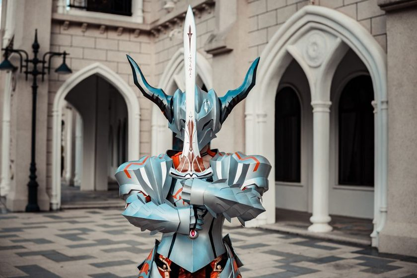

AnálisesElden Ring Nightreign: quando o roguelike engole a alma de FromSoftware
Depois de 40 horas testando o spin-off cooperativo, a conclusão é dividida: a estrutura de rodadas de 40 minutos aposenta o ritmo contemplativo da série original — e nem todo mundo vai aceitar a troca.